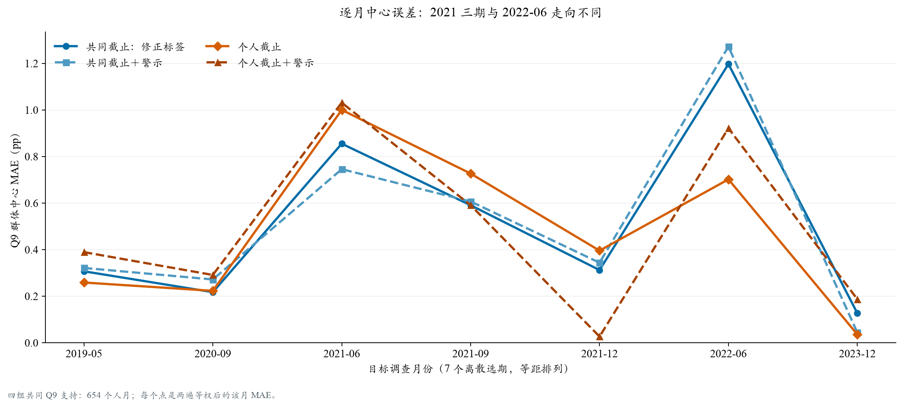
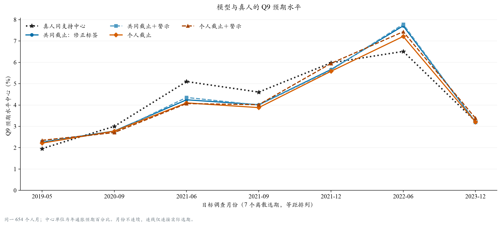
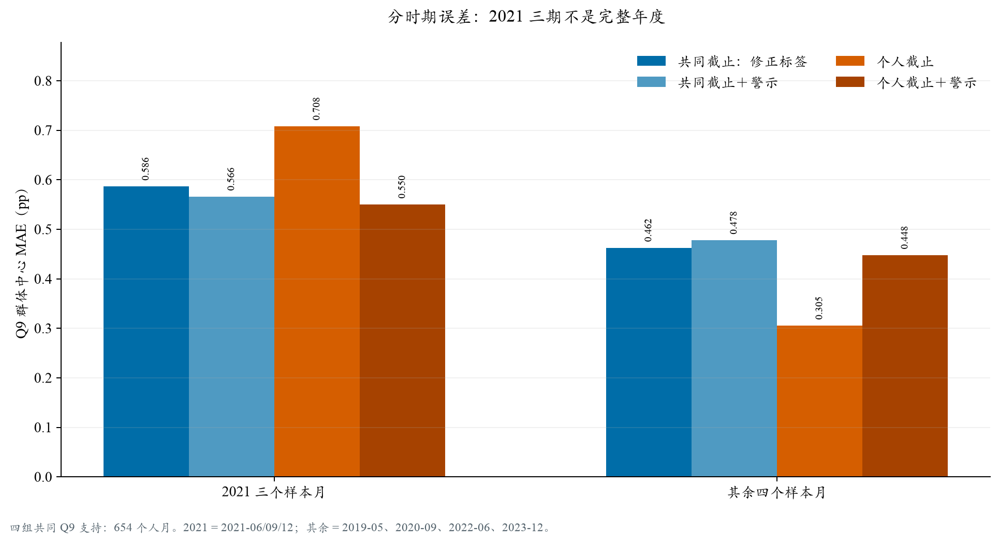
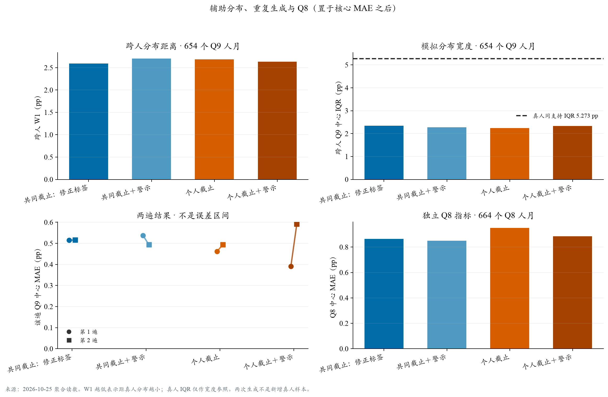

个人日期口径与警示权重：七个已看过月份的 Q9 结果
T0 与 T1 都是可继续比较的工作候选：T0 的七期 MAE 最低、两遍相对 C0 都改善，但 2021 三期误差变大；T1 相对 C0 的总体与 2021 MAE 都较低，却在两遍间出现反向结果。现有证据支持并列取舍，不支持把警示权重一概打开或一概关掉。
暂行取舍（待主代理复核）：T0 可作为“总体中心 MAE 与两遍方向一致”的候选；T1 可作为“总体 MAE 与 2021 三期同时低于 C0”的平衡候选。T1 的两遍相对 C0 一好一坏，不能称为稳定或显著。继续时可把 T0/T1 一并带入预先锁定的独立日期复核，再按用户的渐进采纳原则权衡核心收益与可解释代价。
这里比较的是模拟输入配置，不是对真人暴露或恐惧的因果结论，也不改变 A82/B11 或旧报告。七个目标月都已被此前研究查看，不构成独立时间验证。
1. 比较设计与支持范围
本轮包含五个视图。O0 是旧 Q3 原始回答；C0 使用旧共同截止，只修复 General news 的先后行；C1 在 C0 上把警示新闻权重设为 2 倍；T0 将个人完成日期换算为纽约时间前一日 23:59:59，并按该日筛选各类 E 信息；T1 在 T0 上再加 2×警示权重。四组 C0/C1/T0/T1 都保留每人 4/8/16/32 篇档位和 CPI 相关度 1.5 倍，其余配置固定。
个人日期由调查完成日推算；问卷没有回答时刻，因此“前一日末”是保守重建约定，不是精确的回答时点。T0 相对 C0 同时改变可见新闻、食品统计、政策和信心信息，不能把这组差异单独称为新闻因果效应。警示权重改变的是可得个人新闻池内的抽样分数，不是实际曝光概率或受访者恐惧程度。
目标月为 2019-05, 2020-09, 2021-06, 2021-09, 2021-12, 2022-06, 2023-12。每月原名单 96 人；2022-06 有一名完成日期落到 2022-07-01，按预先规则排除，故七期共 671 个入选个人月。新组各有两遍随机生成；两遍不是额外真人样本。
主比较：四个新组在同一批 654 个有效 Q9 个人月、664 个有效 Q8 个人月上比较。O0 五组参照另用 652 个 Q9 / 662 个 Q8 个人月。T0 与照抄本人上期的六组基线视图用 532 个 Q9 / 547 个 Q8 个人月。支持口径不同，不能把各表中的数字直接相减。旧 MAE 审阅报告的 Q3=0.439pp 是 641 个人月，不能作为本轮 C0/T0 的直接基线。
中心 MAE 定义：每人十档 Q9 概率按冻结计分器转换为预期水平；在每个目标月，用设计权重计算模型与真人同支持中心，再取两者差的绝对值。最后对“目标月 × 生成遍次”单元等权平均。它不是个人平均误差；两遍也不是新增受访者。Q8 单独统计。
本轮模型：DeepSeek V3.2 / SiliconFlow FP8，温度 0.5；报告整理未调用 API、未重拟 Q9。底层试验有 4,096 个新增请求；53 次技术补跑全部恢复为可用结果，旧档案中 6 个逻辑缺失仍保留。已报告 API 费用 $2.808300，另列未知费用预留 $0.205638。
2. 首先看总体与 2021 三期
| 组别（共同 654 人月） | 七期 MAE（pp） | 2021 三期 MAE（pp） | 其余四期 MAE（pp） | RMSE（pp） | W1（pp） | 跨人 IQR（pp） |
|---|---|---|---|---|---|---|
| 共同截止：修正标签 | 0.516 | 0.586 | 0.462 | 0.631 | 2.591 | 2.351 |
| 共同截止＋警示 | 0.515 | 0.566 | 0.478 | 0.639 | 2.702 | 2.281 |
| 个人截止 | 0.478 | 0.708 | 0.305 | 0.575 | 2.686 | 2.239 |
| 个人截止＋警示 | 0.491 | 0.550 | 0.448 | 0.614 | 2.637 | 2.339 |
T0 相对 C0 的七期 MAE 下降 0.038pp（约 7.3%），但 2021 三期从 0.586 升到 0.708pp；其余四个样本月则从 0.462 降到 0.305pp。T0 在 3/7 个离散月的 MAE 较低，2022-06 单月下降 0.495pp；删去该月后七期其余 MAE 差为 +0.039pp。删月数值说明收益集中，不能抹去全样本上已观察到的平均改善。2021 仅指 6、9、12 月，不能外推成完整年份。

| 目标月 | C0 MAE（pp） | C1 MAE（pp） | T0 MAE（pp） | T1 MAE（pp） | 共同有效 n |
|---|---|---|---|---|---|
| 2019-05 | 0.307 | 0.322 | 0.259 | 0.390 | 91 |
| 2020-09 | 0.218 | 0.272 | 0.223 | 0.292 | 91 |
| 2021-06 | 0.855 | 0.746 | 1.001 | 1.032 | 94 |
| 2021-09 | 0.591 | 0.607 | 0.727 | 0.591 | 94 |
| 2021-12 | 0.313 | 0.344 | 0.396 | 0.027 | 94 |
| 2022-06 | 1.197 | 1.272 | 0.702 | 0.922 | 95 |
| 2023-12 | 0.127 | 0.044 | 0.036 | 0.187 | 95 |
3. 预期水平与真人同支持中心
下图报告模型与真人 Q9 中心水平，不是误差指标。2022-06 的 C0 中心为 7.710%，T0 为 7.215%，真人同支持中心为 6.513%。T0 相对 C0 的该月 MAE 变化为 -0.495pp。


4. 个人日期的变化集中在哪些人群？
按个人截止日期相对旧共同截止的早晚作描述性拆分，2022-06 早截止组有 57 人、有效样本量 44.9；该组模型个人预期均值的 T0−C0 平均差为 -1.286pp，组内中心 MAE 从 1.499 降到 0.582pp。晚截止组有 36 人、有效样本量 30.6，预测均值差为 -0.039pp，中心 MAE 从 0.810 到 0.672pp。
这与“较早回答者在旧共同截止下可能被分配到后来发布的信息，个人日期口径会削弱这类错配”的解释一致；但不能确认单一机制：T0 同时按时间筛选新闻、食品、政策与信心信息，分组中心 MAE 也不能相加还原总体 MAE。2021-06 和 2021-09 的晚截止组 T0−C0 个人均值差分别为 -0.164pp 与 -0.599pp；都不是正值，说明“晚截止必然抬高预期”也不受这两组数据支持。
展开：全部日期组的 n、有效 n 与组内描述
同日组样本极少；组内 MAE 是各自子集描述值，不可相加为总体指标，也不用于推断因果方向。
| 月份 | 个人截止相对旧共同截止 | n | 有效 n | T0−C0 个人预期均值差（pp） | C0 中心 MAE（pp） | T0 中心 MAE（pp） | T1 中心 MAE（pp） |
|---|---|---|---|---|---|---|---|
| 2019-05 | 个人截止早于旧共同截止 | 29 | 24.0 | 0.322 | 1.192 | 1.094 | 1.186 |
| 2019-05 | 个人截止晚于旧共同截止 | 62 | 51.7 | 0.039 | 0.185 | 0.174 | 0.174 |
| 2020-09 | 个人截止早于旧共同截止 | 25 | 21.9 | -0.109 | 0.365 | 0.325 | 0.535 |
| 2020-09 | 个人截止与旧共同截止同日 | 6 | 5.3 | 0.000 | 0.141 | 0.141 | 0.148 |
| 2020-09 | 个人截止晚于旧共同截止 | 60 | 47.7 | -0.085 | 0.122 | 0.122 | 0.066 |
| 2021-06 | 个人截止早于旧共同截止 | 28 | 24.5 | 0.078 | 2.023 | 1.633 | 1.404 |
| 2021-06 | 个人截止与旧共同截止同日 | 1 | 1.0 | 0.000 | 0.666 | 0.666 | 1.412 |
| 2021-06 | 个人截止晚于旧共同截止 | 65 | 55.4 | -0.164 | 0.529 | 0.776 | 0.822 |
| 2021-09 | 个人截止早于旧共同截止 | 42 | 36.0 | 0.033 | 2.045 | 2.231 | 1.942 |
| 2021-09 | 个人截止与旧共同截止同日 | 1 | 1.0 | 0.000 | 5.432 | 5.432 | 3.671 |
| 2021-09 | 个人截止晚于旧共同截止 | 51 | 44.9 | -0.599 | 0.036 | 0.164 | 0.167 |
| 2021-12 | 个人截止早于旧共同截止 | 35 | 28.8 | -0.002 | 0.622 | 0.337 | 0.064 |
| 2021-12 | 个人截止与旧共同截止同日 | 5 | 4.8 | 0.000 | 0.532 | 0.532 | 0.401 |
| 2021-12 | 个人截止晚于旧共同截止 | 54 | 45.2 | 0.191 | 0.201 | 0.384 | 0.044 |
| 2022-06 | 个人截止早于旧共同截止 | 57 | 44.9 | -1.286 | 1.499 | 0.582 | 0.728 |
| 2022-06 | 个人截止与旧共同截止同日 | 2 | 2.0 | 0.000 | 1.822 | 1.822 | 0.999 |
| 2022-06 | 个人截止晚于旧共同截止 | 36 | 30.6 | -0.039 | 0.810 | 0.672 | 0.995 |
| 2023-12 | 个人截止早于旧共同截止 | 34 | 27.6 | -0.347 | 0.222 | 0.450 | 0.460 |
| 2023-12 | 个人截止与旧共同截止同日 | 4 | 3.4 | 0.000 | 0.302 | 0.302 | 0.425 |
| 2023-12 | 个人截止晚于旧共同截止 | 57 | 43.9 | 0.348 | 0.491 | 0.400 | 0.392 |
5. 警示权重的证据与边界
在同一 654 人月上，C1 相对 C0 的七期 MAE 几乎不变（0.515 vs 0.516pp），2021 三期则略低（0.566 vs 0.586pp）。加在个人日期口径上的 T1 相对 C0，七期 MAE 为 0.491 vs 0.516pp，2021 三期为 0.550 vs 0.586pp；两项都较低。T1 相对 T0 的七期 MAE 高 0.014pp，但 2021 三期低 -0.158pp。因而 T0 与 T1 体现的是核心指标间的不同取舍。
警示标签新闻在 T0 的所选个人新闻条目中占 35.4%（2,855/8,059）；T1 占 42.5%（3,425/8,059）。2×设置改变了所选警示标签条目比例，但标签描述文章内容，不代表真人实际阅读、恐惧或因果暴露；选择更多警示内容也不保证预测水平单调上升。
逐遍比较更谨慎：在 654 个四组共同个人月上，C0 两遍 MAE 为 0.515/0.516pp；T0 为 0.461/0.494pp，两遍都较低。T1 为 0.391/0.592pp，相对 C0 的方向一好一坏；单次两遍无法表明稳定性。
| 组别 | 第 1 遍 MAE（pp） | 第 2 遍 MAE（pp） |
|---|---|---|
| 共同截止：修正标签 | 0.515 | 0.516 |
| 共同截止＋警示 | 0.537 | 0.493 |
| 个人截止 | 0.461 | 0.494 |
| 个人截止＋警示 | 0.391 | 0.592 |
两遍 MAE 变化可以反映随机生成对当前结果的敏感程度，但不能充当统计区间；在新时间段作出取舍前应重复检查，而不是按目标月挑不同实验组拼出最佳曲线。
6. 辅助：分布代价与 Q8
W1 和跨人 IQR 放在核心 MAE 与 2021 分组结果之后阅读。四组主支持真人跨人 IQR 为 5.273pp，模型约 2.239–2.351pp，模型分布仍明显偏窄。W1 与 IQR回答不同问题；Q8 独立指标使用 664 个共同个人月。

| 组别 | Q8 中心 MAE（pp） | Q8 支持 |
|---|---|---|
| 共同截止：修正标签 | 0.864 | 664 |
| 共同截止＋警示 | 0.850 | 664 |
| 个人截止 | 0.950 | 664 |
| 个人截止＋警示 | 0.886 | 664 |
7. O0 修复参照与照抄上期基线（另支持）
O0/C0 只在 652 个五组共同 Q9 支持上比较；C0−O0 MAE 为 0.012pp。这个对照用于呈现 General 先后行修复后的差异，不把 O0 改写成重跑结果。
| 组别（五组共同支持 652） | 七期 MAE（pp） | 2021 三期 MAE（pp） | 其余四期 MAE（pp） |
|---|---|---|---|
| 旧Q3原始回答 | 0.517 | 0.547 | 0.495 |
| 共同截止：修正标签 | 0.529 | 0.618 | 0.462 |
| 共同截止＋警示 | 0.533 | 0.607 | 0.478 |
| 个人截止 | 0.478 | 0.710 | 0.305 |
| 个人截止＋警示 | 0.493 | 0.554 | 0.448 |
照抄本人上期的比较只覆盖有真实上期可用的子集。下表只用五组加 baseline 的 532 个共同 Q9 个人月；T0 的 0.339pp 与 copy_previous 的 0.384pp 不可和主表 654 支持上的结果直接横比。四组 C0/T0/copy_previous 主配对支持另有 534 个个人月。
| 组别（六组共同支持 532） | 七期 MAE（pp） | 2021 三期 MAE（pp） | 其余四期 MAE（pp） | W1（pp） | 跨人 IQR（pp） |
|---|---|---|---|---|---|
| 个人截止 | 0.339 | 0.411 | 0.285 | 2.417 | 2.221 |
| 照抄本人上期 | 0.384 | 0.346 | 0.413 | 0.994 | 5.507 |
8. 与旧 Q3 结果桥接：精确重叠支持 640
旧报告的 Q3=0.4388pp 使用 641 人月，新四组主表使用 654 人月，两数不能直接相减。对两轮数据按同一批重叠个人月重新对齐后，精确共同支持为 640 人月：旧 Q3/O0 为 0.443pp，C0 为 0.461pp，T0 为 0.407pp。这个同支持桥接显示七期平均 MAE 从 O0 到 T0 下降约 0.036pp；相同 2021 三期子集中（276 人月），C0 0.448pp → T0 0.544pp，仍然变差。
这里可说七期平均观察到改善，但七个此前看过的月份不能证明跨期稳定。旧支持原始 641 人月的数值仅作历史参照；不得把它与本轮 654 人月直接比较。
9. 下一步配置取舍
- 支持口径、两遍读数、日期组与历史桥接已完成独立复核；本页不自动修改默认配置。
- 下一步选择 T0 或 T1 中的一个工作候选，开展完整 A 时间范围复核，并保留本轮两者的对照；先明确总体 MAE、2021 上行期与 2022-06 高估期的权衡，不再扩展参数搜索。完整 A 范围已有结果可见，不能称新的独立盲测。
- 不按月份挑赢家拼接成绩。可以保留 T0 的总体与跨遍次信号，也可以把 T1 作为兼顾总体和 2021 的工作候选；取舍依据既定核心目标与可接受代价；两遍不一致作为限制保留，独立窗口验证有条件时另做，不把它变成当前收尾的新门槛。
来源：2026-10-25 聚合读数 · SHA-256 5ddb813c3fe333e49940ddec658263dff45390177920150f2474d0a556f51c49。数据仅含聚合评价字段；没有嵌入个人编号、位置列表、案例或原始提示。结果限定在七个此前已查看的目标月，是探索性机制证据，不是独立时间验证，不作因果断言。